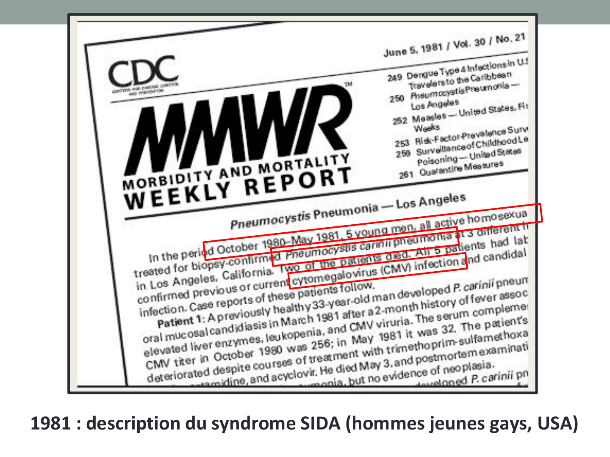
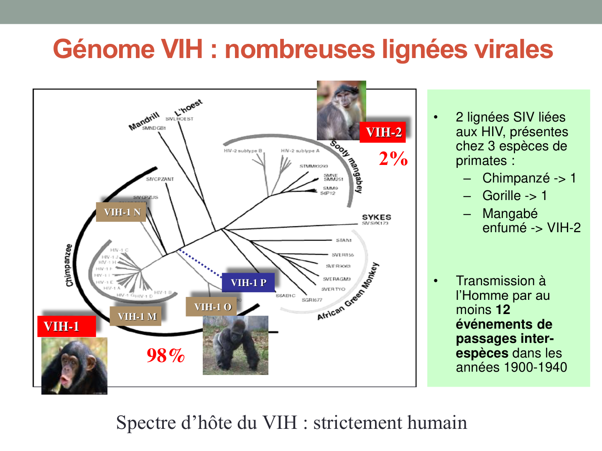
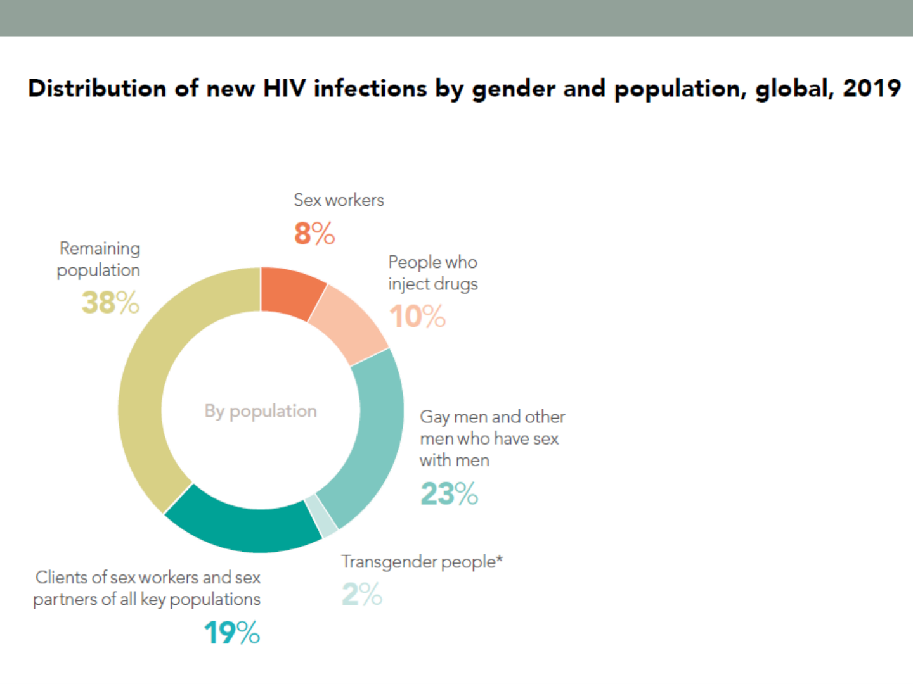
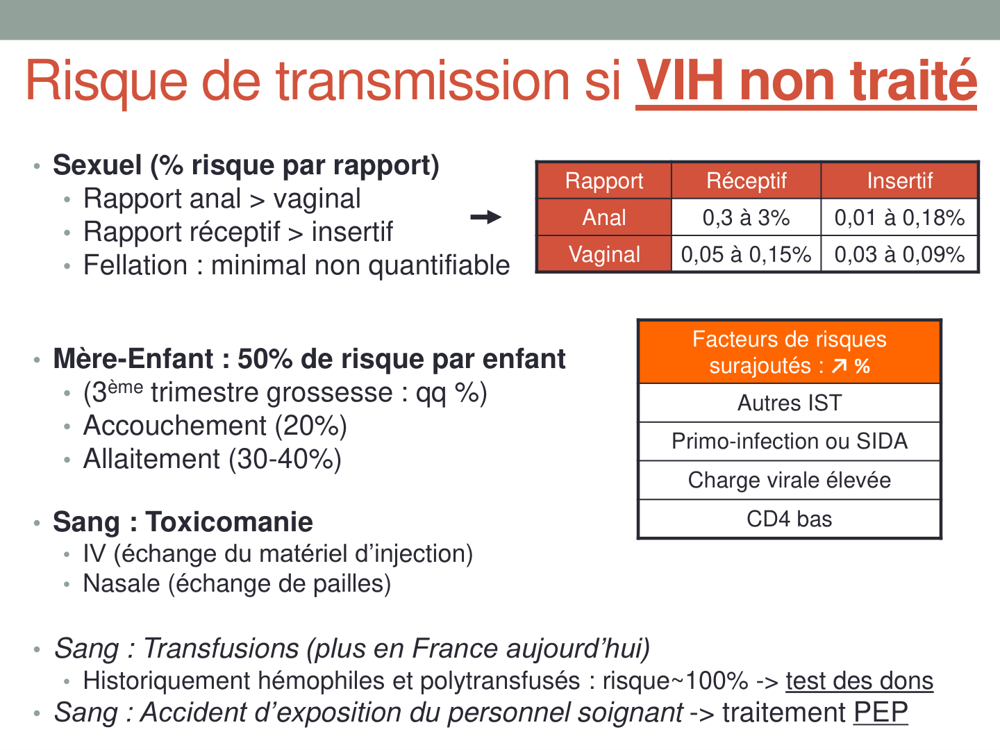
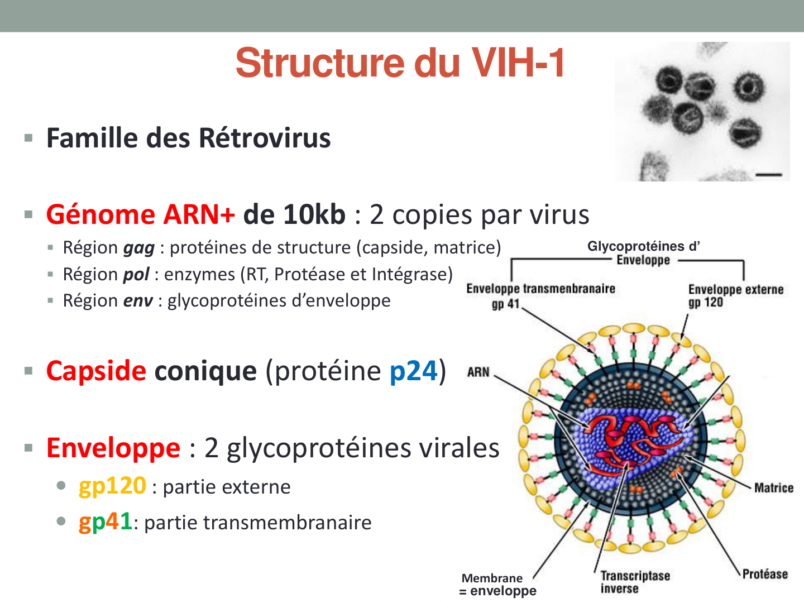
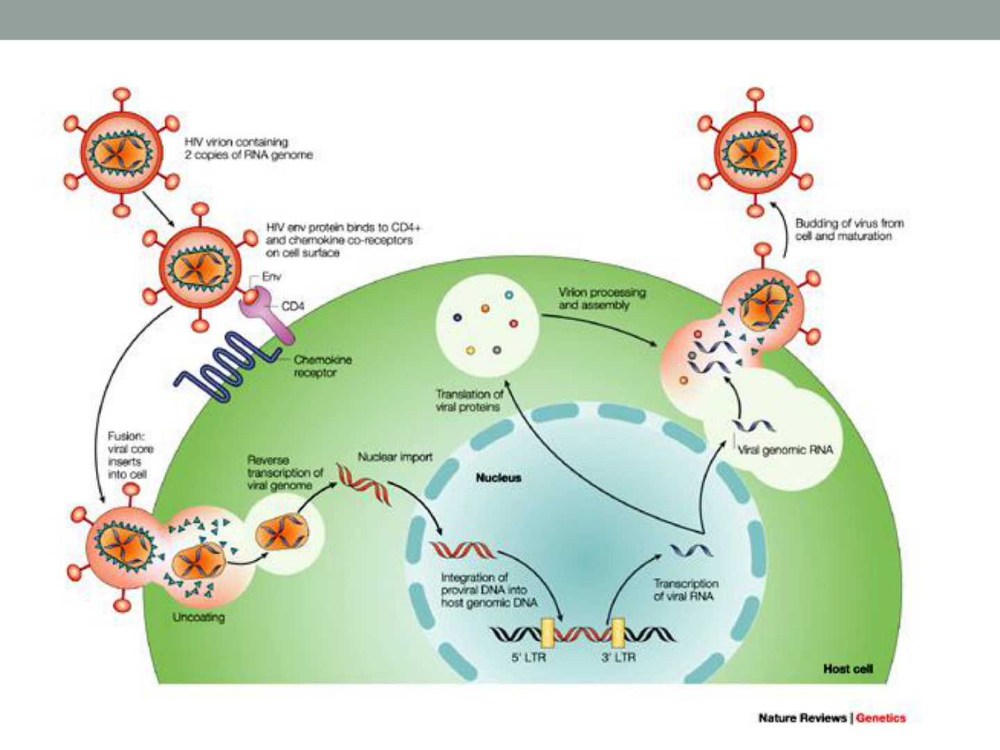
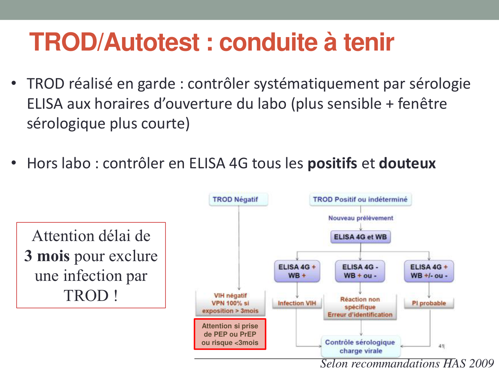
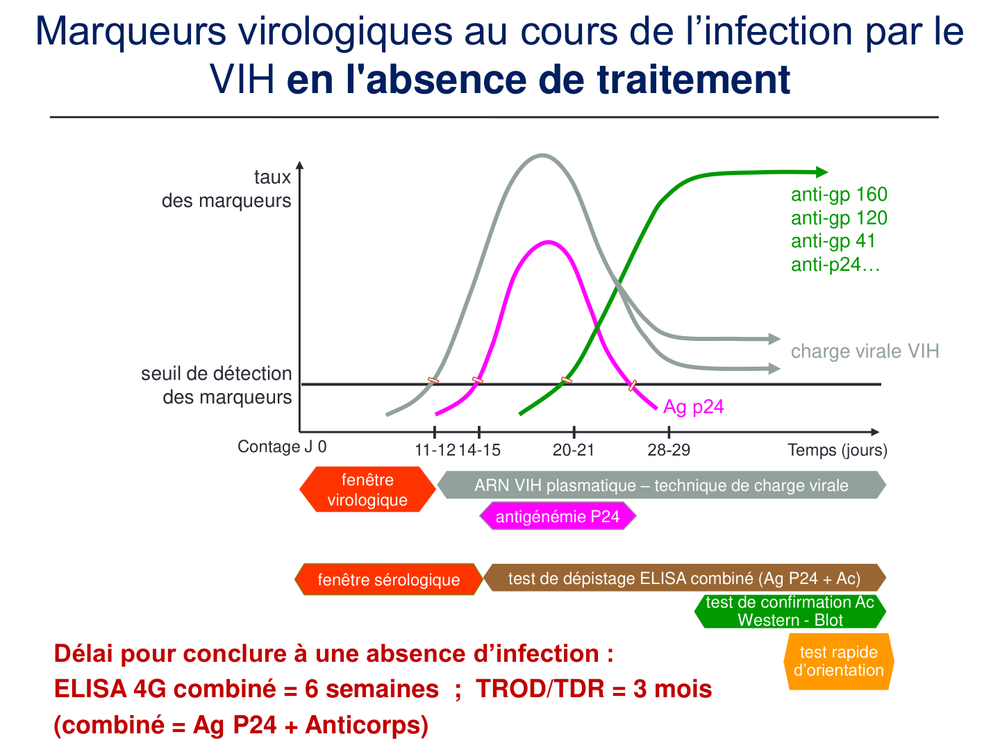
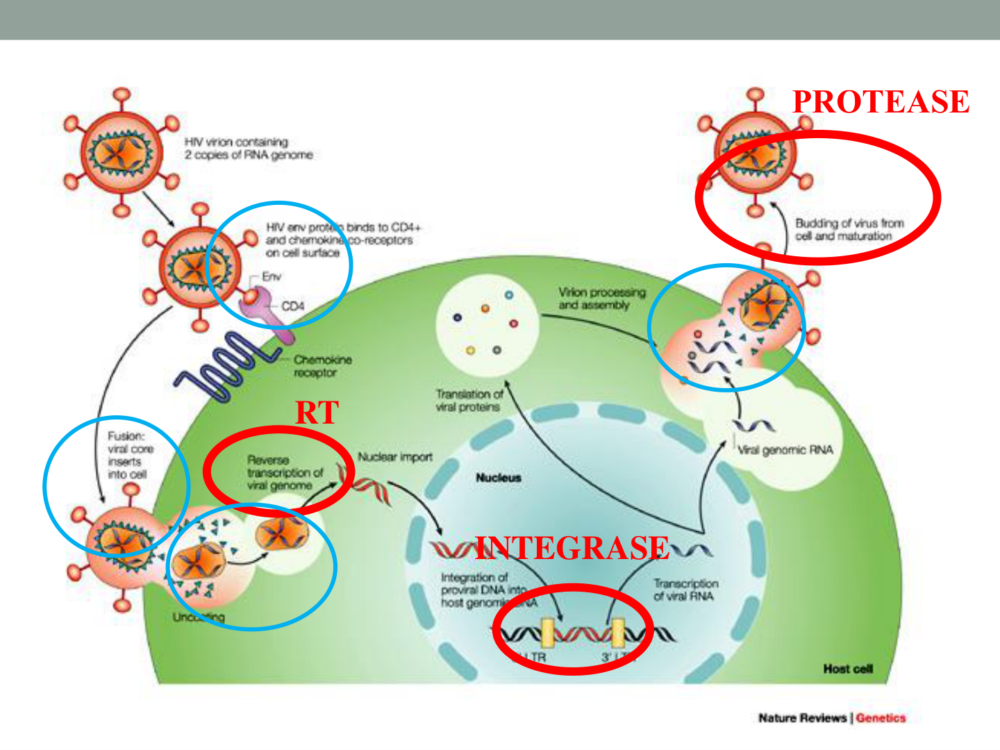
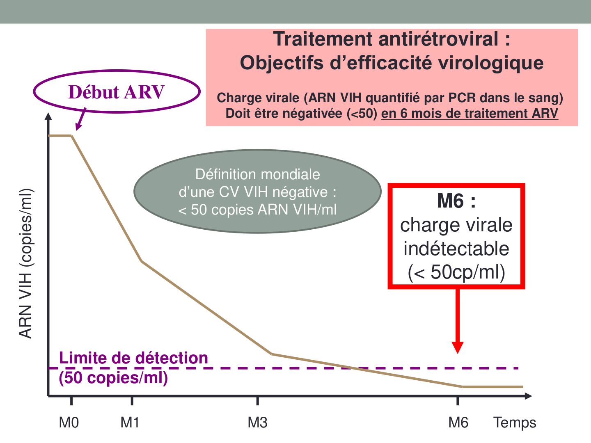

Premier ARV : AZT (zidovudine) en monothérapie → échec rapide (résistances)
1996
Première trithérapie antirétrovirale efficace (HAART) — révolution thérapeutique
2026
~40 millions personnes VIH+ dans le monde · innovations pharma · arrêt USAID

MMWR, 5 juin 1981 (CDC, Atlanta). Premier rapport officiel décrivant 5 cas de pneumocystose et de CMV chez des jeunes hommes homosexuels à Los Angeles — acte de naissance du SIDA.2. Origines & phylogénie
Passage inter-espèces (zoonose)
VIH-1 (98 % des infections mondiales) ← SIV du chimpanzé (Pan troglodytes), Zaïre/Cameroun
VIH-2 (1-2 % en France) ← SIV du mangabé enfumé (Cercocebus atys), Afrique de l'Ouest
Passage à l'homme : ~1920, Afrique sub-saharienne, via bushmeat (viande de brousse)
Au moins 12 événements de passages inter-espèces indépendants (années 1900-1940)
VIH-1 vs VIH-2
VIH-1
VIH-2
Prévalence mondiale
98 %
2 % (surtout Afrique Ouest)
Pathogénicité
Élevée
Plus faible (progression lente)
Transmissibilité
Élevée
Moins transmissible
Résistance naturelle INNTI
Non
OUI — résistance naturelle
Charge virale plasmatique
Souvent élevée
Souvent < 1 000 copies/mL
Suivi CV
CV VIH-1 standard
Test spécialisé (CV VIH-1 ne détecte pas VIH-2)
VIH-2 : résistance naturelle à tous les INNTI (éfavirenz, rilpivirine, doravirine) — traitement différent !

Phylogénie VIH. VIH-1 (98 % des infections) issu du SIV du chimpanzé ; VIH-2 (2 %) issu du mangabé. Spectre d'hôte : strictement humain. (Source : cours)
Groupes et sous-types de VIH-1
VIH-1 groupe
Sous-types principaux
Importance
M (majeur)
A, B, C, D, F, G, H, J, K
99 % des infections mondiales. Sous-type C = 50 % global
N
—
Rare, Cameroun
O (outlier)
—
Quelques milliers, Afrique Centrale. Résistance naturelle à certains INNTI
P
—
Très rare
CRF (Circulating Recombinant Forms) : > 150 formes recombinantes décrites, issues de co-infections. Impact sur le traitement (résistances croisées).
Hyper-variabilité : ARN → RT commet 1 erreur/10 000 bases → 1 mutation à chaque cycle → 109 virions/jour = toutes les mutations pré-existent chez chaque patient (quasi-espèces).
3. Épidémiologie
Statistiques mondiales (ONUSIDA 2024)
39,9 millions de personnes vivant avec le VIH (dont 1,5 million d'enfants)
53 % sont des femmes et des filles
30 millions ont accès aux ARV (75 % — mais seulement 57 % des enfants séropositifs)
630 000 décès liés au SIDA en 2023 · > 40 millions de décès cumulés en 40 ans
Nouvelles infections 2024 : 1,3 million/an

Nouvelles infections VIH par population clé (global, 2019). HSH : 23 % · Partenaires des populations clés : 19 % · Travailleurs du sexe : 8 % · UDIV : 10 % · Population générale restante : 38 %.
Primo-infection ou stade SIDA (charge virale très élevée)
Charge virale élevée du partenaire
CD4 bas du partenaire source
U = U (Undetectable = Untransmittable) : patient VIH+ sous ARV efficace, CV < 50 copies/mL → non contagieux. Études PARTNER/PARTNER2 : 0 transmission sur 120 000 rapports sexuels (Lancet 2019).
Pas de transmission par :
Salive, larmes, sueur, urine
Piqûre de moustique (NON !) — virus ne se réplique pas chez l'insecte
Toilettes publiques (NON !)
Contact social ordinaire (poignée de main, repas commun, piscine)
Virus enveloppé = fragile : inactivé par savon/détergent, Dakin 0,2 % (5 min), éthanol 70 % (5 min), chaleur 56° / 30 min. Transmission directe uniquement (pas de survie dans l'environnement).

Risques de transmission du VIH per acte, par voie d'exposition (source : cours Dr Delagrèverie). La voie anale réceptive est la plus à risque ; la voie orale est quasi-nulle. Ces chiffres concernent un partenaire non traité et une CV détectable.5. AES — Accident d'Exposition au Sang
Conduite à tenir immédiate (ordre chronologique)
Laver immédiatement au savon + rincer abondamment
Désinfecter 5 min : Dakin ou Alcool 70°
Évaluer : statut VIH/hépatite du patient source — connu ou inconnu ?
Si statut inconnu : dépistage du patient source en urgence (accord du patient requis)
Voir le médecin d'astreinte AES : évaluation indication PEP
Déclarer à la médecine du travail + formulaires d'accident de travail
Risques per acte (source VIH+ non traité)
Type d'AES
Risque estimé
Piqûre percutanée profonde (aiguille creuse)
0,3 %
Coupure avec bistouri
~0,1 %
Projection muqueuse / peau lésée
< 0,1 %
Rapport anal réceptif (non professionnel)
0,3–3 %
Si patient source VIH+ : risque dépend de sa charge virale. CV indétectable = risque quasi nul mais PEP généralement proposée quand même.
3 régions génomiques : gag (protéines de structure), pol (enzymes), env (glycoprotéines d'enveloppe)
Gènes régulateurs : tat, rev, nef, vpr, vpu, vif
Structure du virion
Composant
Détail
Rôle / Cible ARV
Enveloppe lipidique
Bicouche lipidique dérivée de la cellule hôte
Protection, fragile (détergents)
gp120 (glycoprotéine externe)
Se lie au récepteur CD4 + corécepteur CCR5/CXCR4
Attachement cellulaire = cible anti-entrée
gp41 (glycoprotéine transmembranaire)
Change de conformation après fixation
Fusion membranes virale/cellulaire
Matrice (p17)
Entre enveloppe et capside
Structure
Capside (p24)
Protéine majeure de capside
Protection ARN. Marqueur biologique = Ag p24
ARN génomique
2 copies ARN+
Information génétique
Reverse transcriptase (RT)
ARN-dépendante + ADN-dépendante + RNaseH
Rétrotranscription ARN→ADN. Pas de relecture → taux d'erreur élevé
Intégrase
Enzyme virale
Intégration ADN proviral dans le génome humain
Protéase
Enzyme virale
Clivage polyprotéines = maturation virion

Structure du VIH-1. Famille Retroviridae. Génome ARN+ 10 kb, diploïde. Capside conique (p24). Enveloppe avec 2 glycoprotéines : gp120 (externe, fixation CD4) et gp41 (transmembranaire, fusion). RT, intégrase et protéase sont les 3 enzymes-cibles des ARV.7. Cycle de réplication
Cellules cibles
Lymphocytes T CD4+ (LT helper) — cibles principales → destruction progressive = immunodépression
Monocytes / Macrophages
Cellules dendritiques
Cellules de Langerhans (muqueuses)
Microglie (SNC) → réservoir cérébral
Pré-requis absolu : la cellule cible doit exprimer CD4 + un corécepteur (CCR5 ou CXCR4). Sans corécepteur, pas d'infection.
Les 7 étapes du cycle viral — cibles ARV
#
Étape
Mécanisme
ARV ciblant cette étape
1
Attachement / Liaison
gp120 → CD4 (changement de conformation) → corécepteur CCR5 (LT mémoires, macrophages) ou CXCR4 (LT naïfs)
Maraviroc (anti-CCR5) · Ibalizumab (anti-CD4)
2
Fusion
gp41 change de conformation → rapprochement membranes → fusion → libération capside dans cytoplasme
Enfuvirtide (T-20, inhibiteur de fusion)
3
Rétrotranscription
ARN viral → ADN double brin par la RT (avec activité RNaseH). Nombreuses erreurs → hypervariabilité
INTI (analogues nucléosidiques/nucléotidiques) · INNTI (non-nucléosidiques)
4
Import nucléaire + Intégration
ADN double brin → noyau via pore nucléaire → intégrase coupe chromosome humain → insertion ADN proviral = infection DÉFINITIVE ET PERMANENTE
INI (dolutégravir, raltégravir, bictégravir)
5
Latence virale
Si cellule quiescente → ADN proviral intégré sans transcription = réservoir latent (impossible à éliminer)
Aucun ARV n'élimine le réservoir
6
Transcription + Traduction
Si cellule activée → ARN pol II cellulaire → ARNm viraux → traduction → polyprotéines Gag, Pol, Env
—
7
Assemblage + Bourgeonnement + Maturation
Assemblage particules immatures à la membrane → bourgeonnement → protéase clive polyprotéines → virion infectieux
IP (darunavir, atazanavir+ritonavir)

Cycle de réplication du VIH (Nature Reviews Genetics). De gauche à droite : fixation gp120/CD4/CCR5 → fusion → rétrotranscription (RT) → import nucléaire → intégration (ADN proviral) → transcription → traduction → assemblage → bourgeonnement → maturation (protéase). Chaque étape = cible thérapeutique potentielle.
Le réservoir viral : obstacle à la guérison
Cellules infectées portent l'ADN proviral intégré dans leur propre ADN
Persistent indéfiniment (cellules à longue vie + mitoses)
Peuvent réactiver la réplication même après des années de traitement
Il est impossible de guérir le VIH ni d'arrêter la trithérapie : le réservoir fait redémarrer le cycle en quelques jours
Histoire naturelle de l'infection VIH sans traitement (Kent et al., AIDS 2017). 3 phases : ① Primo-infection (semaines 0-12) : CV très élevée, CD4 chutent transitoirement ; ② Phase chronique asymptomatique (années) : CD4 baissent lentement, CV stable ; ③ SIDA : CD4 < 200/mm³, CV remonte, infections opportunistes. Les CTL (lymphocytes T cytotoxiques) contrôlent partiellement la réplication après la primo-infection.
Phase 1 — Primo-infection VIH
Survient ~15 jours après exposition (10-30 j)
Symptômes dans seulement ~50 % des cas : syndrome pseudo-grippal fébrile, angine/pharyngite, rash cutané, diarrhée, adénopathies, méningite aseptique
Signes non spécifiques et fugaces → penser à tester !
Réponse immunitaire anti-VIH faible → forte réplication → charge virale très élevée → contagiosité +++
Peu/pas d'anticorps → test de dépistage adapté indispensable (ELISA 4G ou PCR)
Séroconversion (~3 semaines post-contage) : apparition Ac anti-VIH
Avoir le réflexe de penser au VIH devant tout syndrome viral aigu après exposition à risque (même minime).
Phase 2 — Infection chronique asymptomatique
Durée : 7-8 ans en moyenne (très variable : 2-20 ans)
Patient "asymptomatique" mais contaminant pendant des années
Équilibre entre réponse immunitaire et réplication virale : charge virale stable ("set point")
Destruction continue des LT CD4+ → lente diminution des CD4
Recommandations France (HAS 2009, confirmées 2017)
Dépistage systématique en population générale : au moins une fois dans la vie entre 15 et 70 ans — quel que soit le niveau de risque déclaré. Avec information et accord du patient. Dépistage global VIH-VHB-VHC recommandé.
Type de dépistage
Population
Fréquence
Systématique
Toute personne 15-70 ans
Au moins 1 fois dans la vie
Ponctuel
Autre IST, recours gynécologique, grossesse
À l'occasion
Ciblé répété
HSH multi-partenaires
Tous les 3 mois
Ciblé répété
Caraïbes, Guyane, Afrique sub-saharienne
Annuel
Ciblé répété
UDIV
Annuel
Où faire le test ?
Laboratoire d'analyses médicales (avec ou sans prescription)
CEGIDD (Centres Gratuits d'Information, Dépistage et Diagnostic)
Associations de lutte contre le VIH / Centres de santé sexuelle
Autotests : vente libre en pharmacie, sang capillaire au bout du doigt (salive NON autorisée en France)

Algorithme de conduite à tenir après TROD positif (source : cours). Tout TROD positif doit être confirmé par sérologie ELISA 4G + WB sur prélèvement veineux. Ne jamais annoncer une séropositivité sur un seul TROD.10. Marqueurs biologiques & algorithme de dépistage

Cinétique des marqueurs virologiques en l'absence de traitement. ARN VIH (charge virale) = 1er marqueur détectable (J11-12). Ag p24 (J14-15). Anticorps anti-VIH (gp120, gp41, p24) = J28-29 — fenêtre sérologique. Délais pour conclure à l'absence d'infection : ELISA 4G = 6 semaines ; TROD/autotests = 3 mois.
I — Test de dépistage : ELISA 4G combiné (1ère intention)
Détecte simultanément : anticorps anti-VIH-1 et anti-VIH-2 (mixte) + Ag p24 du VIH-1 (combiné)
Sensibilité augmentée en primo-infection (p24 se positive avant les Ac)
Fenêtre sérologique : 6 semaines (vs 3 mois pour TROD)
Si négatif et pas de risque dans les 6 semaines = absence d'infection
Quelques faux+ → test de confirmation systématique si positif
Souvent indisponible en garde → TROD en urgence
TROD / Autotests (tests rapides)
Technique immunochromatographique rapide (< 30 min)
Détecte les Ac anti-VIH (pas l'Ag p24)
Fenêtre sérologique : 3 mois (plus longue que l'ELISA 4G)
Autotest : sang capillaire au bout du doigt (salive NON autorisée en France)
Avantages : rapide, confidentiel, personnes éloignées du système de soins
TROD positif → confirmer systématiquement par sérologie ELISA
Délais à retenir : TROD/autotest = 3 mois pour exclure une infection · ELISA 4G combiné = 6 semaines.
II — Test de confirmation : Western Blot (Immunoblot)
Réalisé sur le même tube si ELISA 4G positif
Révélation des anticorps anti-VIH dirigés contre les protéines virales spécifiques
Western Blot (immunoblot) VIH. Chaque bande correspond à un anticorps dirigé contre une protéine virale spécifique (gp160, gp120, p66, p55, p51, gp41, p31, p24, p17). Positif = ≥ 3 anticorps incluant anti-gp120 OU anti-gp41 ET anti-p24. Permet la distinction VIH-1 / VIH-2.
III — PCR ARN VIH (charge virale diagnostique)
Détection directe du génome viral (RT-PCR temps réel)
Fenêtre virologique : ~10-11 jours post-contage (la plus courte)
Attention : négative si patient VIH+ traité efficacement !
Principale utilisation : suivi de l'efficacité du traitement ARV
Algorithme de dépistage biologique (HAS 2009)
1er prélèvement : ELISA 4G combiné (Ag + Ac)
Si positif → WB de confirmation sur le même tube
2e prélèvement séparé obligatoire (identitovigilance) → 2e ELISA 4G
Si WB + et 2e ELISA + → infection VIH confirmée
Si WB – ou indét → PCR ARN VIH (primo-infection ?) + contrôle sérologique 3 semaines
Bilan virologique au diagnostic de VIH
Confirmer la séropositivité sur un 2e prélèvement
Déterminer le type (VIH-1 / VIH-2) via le WB
Génotypage : recherche de résistances ARV basales (séquençage RT + protéase + intégrase)
Charge virale ARN VIH pré-thérapeutique (PCR)
CD4 : numération (valeur absolue + %)
Co-infections : VHB, VHC, IST (syphilis, gonocoque, Chlamydia)
11. Traitement antirétroviral (ARV)
Principe : trithérapie universelle
Recommandation OMS depuis 2015 : toutes les infections VIH doivent être traitées — quel que soit le stade, quel que soit le CD4, le plus tôt possible, pour toute la vie sans interruption.
Infection à VIH = ALD n°7 → prise en charge à 100 %.
Objectif virologique
Charge virale (PCR ARN VIH) indétectable : < 50 copies/mL en 6 mois de traitement ARV
Récupération immunitaire : CD4 > 500/mm³
Résultat : pas d'évolution vers le SIDA, espérance de vie normale, patient non contagieux (U=U)
Classes d'ARV et mécanismes d'action
Classe
Abréviation
Mécanisme
Exemples principaux
Inhibiteurs nucléos(t)idiques de la RT
INTI
Analogues de nucléosides/nucléotides → incorporation dans l'ADN proviral → terminaison de chaîne
2 INTI + 1 INI (ou 1 IP/r ou 1 INNTI) · Comprimés combinés (STR = Single Tablet Regimen) pour favoriser l'observance · Dolutégravir en INI préférentiel.
Exemples de combinaisons
Combinaison
Composants
Forme
Biktarvy
Bictégravir + TAF + FTC
1 cp/j
Triumeq
Dolutégravir + ABC + 3TC
1 cp/j
Dovato
Dolutégravir + 3TC
1 cp/j (bithérapie)
Truvada
TDF + FTC
PrEP + backbone INTI

Cibles thérapeutiques des ARV sur le cycle de réplication. RT (reverse transcriptase) = cible des INTI et INNTI. Intégrase = cible des INI. Protéase = cible des IP. Anti-entrée = niveau de la fixation gp120/CD4/CCR5.

Objectif virologique du traitement ARV. La charge virale (copies ARN VIH/mL plasma) doit être indétectable (< 50 copies/mL) à M6 de traitement. Un échec virologique (CV > 50 sous ARV) → évoquer problème d'observance ou résistance → génotypage.
Résistances aux ARV
Hypervariabilité de la RT → mutations de résistance sélectionnées sous pression médicamenteuse
Monothérapie (ou bithérapie sous-efficace) → émergence rapide de mutants résistants
Résistances croisées entre ARV de la même classe (mutations communes)
Génotypage de résistance : séquençage RT + protéase + intégrase → indiqué au diagnostic ET en cas d'échec virologique (CV > 50 sous ARV)
Principales résistances naturelles : VIH-2 → tous les INNTI · VIH-1 groupe O → certains INNTI.
12. Suivi biologique du patient VIH
Paramètres de suivi
Paramètre
Outil
Objectif / Signification
Efficacité ARV
Charge virale ARN VIH (PCR)
< 50 copies/mL = succès. CV détectable sous ARV = échec virologique → génotypage + observance
IP et certains INTI = dyslipidémie, insulinorésistance → risque CV
Co-infections
Sérologies VHB, VHC, IST
Bilan IST systématique, dépistage annuel VHC si comportement à risque
Suivi des patients VIH : consultation spécialisée tous les 3-6 mois · CV + CD4 + bilan de tolérance. VIH-2 : CV spécialisée (CV VIH-1 standard ne détecte pas VIH-2).